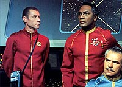
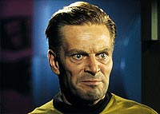
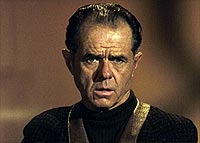
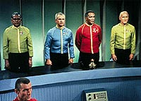
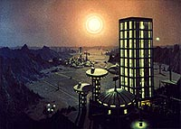
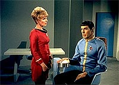

|
MANCHETE
DO EPISÓDIO
Segmento
com problemas de execução
discute tema 'homem versus máquina'
Episódio
anterior | Próximo episódio Sinopse:
Data Estelar:
2947.3. A USS
Enterprise chega à base estelar 11 para reparos após enfrentar uma forte tempestade
iônica, durante a qual o oficial de registros, o tenente-comandante Ben Finney,
morreu enquanto executava o que aparentava ser um procedimento-padrão da nave.
Kirk se apresenta ao comodoro Stone, responsável pela base estelar, e entrega
seu relatório do incidente.
Entretanto, os diários de registro
da nave mostram uma versão diferente daquela dada por Kirk. Stone começa a ter
dúvidas sobre o depoimento de Kirk (suspeitando de perjúrio do capitão) no mesmo
momento em que a filha de Ben Finney, Jamie, entra na sala do comodoro acusando
Jim da morte do pai. As fitas de registro mostram que Kirk havia ordenado a ejeção
de uma suposta cápsula iônica na qual estava Finney fazendo leituras durante a
tempestade enquanto a nave ainda estava em alerta amarelo, o que só deveria ser
feito quando a nave já estivesse em alerta vermelho. O lançamento prematuro não
teria dado ao tripulante a chance de deixar a cápsula e causado sua morte. Com
o conflito entre as gravações do diário e o relatório de Kirk, Stone ordena a
instauração de um inquérito.
Confinado à base estelar durante tal inquérito,
Kirk, tendo McCoy como companhia, é hostilizado por alguns oficiais da Frota que
o julgam culpado pela morte de Finney. Após uma leve discussão, Kirk deixa o bar
onde estavam, enquanto McCoy cruza com uma antiga amiga do capitão, Areel Shaw.
 Durante
o inquérito ficamos sabendo que Finney havia sido instrutor de Kirk na academia,
os dois acabaram se tornando grandes amigos (Jamie recebeu o nome em uma homenagem
a Kirk) e que ambos foram designados para uma mesma nave, a USS Republic (NCC-1371).
Durante uma rendição de serviço, o então alferes Kirk encontrou uma válvula que
havia sido deixada aberta pelo então tenente Finney de forma negligente, o que
poderia ter causado a destruição da Republic. Ele corrigiu o problema e relatou
o incidente de forma oficial, o que custou a Finney uma punição e tirou-lhe a
preferência para promoções.
O inquérito indica que Kirk é culpado
de perjúrio e negligência culposa. O comodoro Stone propõe um acordo, onde Kirk
alegaria esgotamento, o que faria com que ele perdesse o comando da nave. Kirk
rejeita e, certo de sua inocência, não só concorda, mas exige que uma corte marcial
seja instaurada.
Enquanto aguarda a chegada dos oficiais que formarão
a corte marcial, e avisado por McCoy da presença de Areel Shaw (um antigo caso
amoroso seu), Kirk volta ao bar onde a encontra. Ambos conversam brevemente sobre
o problema de Kirk e como Areel é advogada da procuradoria-geral da Frota Estelar,
Kirk pede que ela o defenda no julgamento, mas alegando estar ocupada ela indica
Samuel T. Cogley para defendê-lo. Ao fim da conversa, Kirk pergunta como Areel
está tão bem informada a respeito de seu caso e ela então lhe confessa ser a promotora
do processo.
Kirk segue a recomendação e aceita a ajuda de Samuel T.
Cogley, um excêntrico advogado, fanático por livros antigos e não adepto do uso
de computadores. A corte marcial inicia os trabalhos. Spock é a primeira testemunha,
seguida da oficial de pessoal da Enterprise e depois McCoy. Apesar de todos tentarem
inocentar Kirk nenhum dos depoimentos --incluindo o dele próprio-- apresenta prova
significativa que o ajude a se livrar das acusações. Curiosamente, Cogley não
interroga nenhuma das testemunhas, exceto Kirk.
 Uma
gravação visual do diário é apresentada onde se vê claramente que Kirk lança a
cápsula antes de emitir um alerta vermelho. Tal prova desconcerta a todos, inclusive
o próprio Kirk e seu advogado --ambos começam a questionar se Kirk é mesmo inocente
da acusação.
Durante um recesso, Spock informa que a revisão dos
computadores da nave não apresenta nenhum sinal de problemas. Jamie, que esteve
presente durante todo o julgamento, reaparece e demonstra estar aceitando melhor
a morte do pai, pedindo desculpas por ter lhe acusado antes. Cogley estranha a
atitude da menina, justo quando as provas apontam para a culpa de Kirk.
Enquanto isso, Spock joga xadrez com o computador da Enterprise, sob protestos
de McCoy. Spock explica que conseguiu vencer o computador por quatro vezes seguidas,
o que deveria ser impossível uma vez que foi o próprio Vulcano quem programou
a máquina para o jogo --sendo assim Spock não deveria ser capaz de vencê-lo, o
que indica alguma falha nos bancos de dados do computador.
A sessão é
reiniciada, mas Spock e McCoy aparecem e informam a Cogley suas recentes descobertas.
O advogado exige que seja permitida a apresentação das novas evidências. Após
um discurso exaltado e sob protestos da promotoria ele é atendido.
Todos
os participantes da corte são levados a bordo da Enterprise, onde a sessão é reiniciada.
Spock explica então os detalhes de como venceu o computador e como isso devia
ser impossível, e como tal descoberta indicava que a programação havia sido alterada,
algo só realizável pelo próprio Spock, pelo Capitão Kirk ou pelo supostamente
falecido Finney. Cogley a partir daí presumiu que Finney estava vivo e escondido
a bordo da Enterprise, por isso não foi achado pela busca ordenada por Kirk na
ocasião.
Um plano é montado para provar esta teoria. Todo o pessoal da
nave é transportado para a superfície e os integrantes da corte marcial são levados
para a ponte. Uma vez lá, McCoy usa uma engenhoca que elimina o som dos batimentos
cardíacos dos presentes. Isso feito, uma batida ainda pode ser captada pelos sensores
da nave, presumindo-se então que esta seja de Finney.
 Kirk
vai até a seção da engenharia e encontra o tenente-comandante, vivo. Este ainda
culpa Kirk por ter sua carreira estagnada e confessa ter planejado uma farsa para
incriminar o capitão pela sua morte e, sem saber que sua filha havia sido trazida
a bordo por Cogley, Finney confessa também ter sabotado a Enterprise. Ele fica
desesperado quando Kirk conta sobre a presença de Jamie, e então uma luta se inicia
enquanto a órbita da Enterprise começa a decair, sem que seus motores possam ser
religados. Kirk vence a luta e desfaz os danos causados, permitindo que a tripulação
da ponte possa estabilizar a órbita da Enterprise.
As acusações contra
Kirk são retiradas e a corte marcial encerrada. Pouco antes da partida da Enterprise,
Areel Shaw informa a Kirk que Samuel T. Cogley assumiu a defesa de Bem Finney.
Ela se despede com um beijo em plena ponte da Enterprise.
Comentários:
"Court Martial" é a mais pura essência de um dos
assuntos preferidos de Gene Roddenberry, o duelo Homem versus Máquina. E, se em
outros episódios este assunto é tratado de forma incidental, aqui ele é o tema
central do segmento. Todo o resto do que se em vê em tela tem por objetivo pavimentar
os caminhos para levar a esse objetivo final, e é por conta dessa obsessão que
são feitas concessões demais durante o episódio, concessões que tornam o resultado
final pouco mais do que regular.
Os problemas começam com a tal
"cápsula iônica" a qual somos (muito mal) apresentados. Não há nenhuma explicação
para a existência de tal dispositivo, algo importante de se saber tendo em vista
que coloca em risco de vida de seu ocupante e principalmente porque é lógico concluir
que não existam dados da tal tempestade ou da nave que os sensores da Enterprise
não possam fornecer sem colocar as vidas de seus oficiais em risco (fato confirmado
seguidamente por inúmeros segmentos de Jornada nas Estrelas, de todas
as séries).
 Além
disto, se já é difícil conceber que uma alteração no registro de gravação --que
deveria ser um sistema absolutamente independente do resto da nave-- possa interferir
no conteúdo de um banco de dados de uso geral, fica ainda mais difícil entender
por que alguém a bordo teria autorização para alterar estes dados, (Kirk, Spock
e Finney tinham), o que diminui muito a utilidade do tal gravador. O que adianta
uma "caixa preta" que pode ser alterada?
Prosseguindo, a maneira escolhida
para exibir o confronto homem e máquina é o normalmente dramático cenário de um
tribunal, mas esta idéia acaba sendo mal-executada, como podemos ver a seguir.
Embora estejamos falando de um cenário fictício, a autoridade do comodoro
Stone, instaurando um inquérito e a seguir, uma corte marcial, parece tremendamente
exagerada (e parece mesmo violar a cadeia de comando, pois não é mostrado em nenhum
momento que ele é de fato o oficial comandante direto de Kirk, ele não poderia
ter feito o que fez por si só, deveria ter contatado o Comando da Frota). Mesmo
a tal corte marcial é apresentada com os trejeitos de um tribunal civil, tendo
inclusive um advogado civil na defesa de Kirk. Por ser um julgamento militar,
a presença de Cogley, e mesmo a de Jamie Finney, também é problemática. Curioso
também é que o episódio não explica o que Jamie (vivida por uma fraca atriz em
um "modelito" horroroso) estava fazendo naquela base estelar em primeiro lugar
e nem se de fato houve ou não uma comunicação entre ela e o pai após o incidente.
O encontro de Kirk com uma antiga namorada (que logo depois descobrimos que
será a promotora no caso de Kirk), numa tentativa de aumentar a pretensa "carga
dramática" de sua situação, é inverossímil, pois o fato deles terem tido algum
relacionamento pessoal daria a ela a quase obrigação legal de declarar-se impedida
de exercer a função (ela inclusive se arrisca a receber uma punição por má prática
da profissão ao não fazer isso --o que não faz muito sentido), e daria a um bom
advogado de defesa a oportunidade de indeferir o julgamento.
 Durante
o julgamento, a oficial de pessoal da Enterprise lembra-se de um registro em particular
na ficha de um dos muitos tripulantes a bordo da Enterprise. É claro que ela pode
ter sido instruída a estudar os detalhes da ficha de Finney por causa de sua participação
no julgamento. Entretanto, se assim foi, por que então o espanto quando a fita
(com diário de gravação visual) foi exibida? Kirk e seu advogado foram para o
tribunal sem ter visto antes a principal prova da acusação? Devemos então acreditar
que ninguém foi avisado de nada e que a oficial de pessoal tem memória fotográfica?
Ou devemos acreditar que os roteiristas convenientemente esqueceram que a defesa
precisa ter ciência prévia de todas as provas e testemunhas apresentadas pela
promotoria?
Depois disso, o discurso de Cogley perante a banca
a fim de convencer Stone a transferir o julgamento para a Enterprise, apesar de
causar (até certo ponto) simpatia ao fã, é por demais abstrato para realmente
convencer alguém a tomar a tal decisão de transferir o lugar do julgamento.
A bordo da Enterprise, um segundo "dispositivo de trama" é inserido, no caso
o tal "supressor de som" ("interpretado" por um nada futurístico microfone), usado
para eliminar as batidas de coração das pessoas a bordo, algo difícil de conceber
e de explicar, visto que a única maneira de impedir a propagação do som seria
impedir as próprias batidas de cada coração. Somente dessa forma o dispositivo
alcançaria seu propósito, mas com o efeito colateral de matar os tripulantes a
bordo. Se pensarmos, por outro lado, que ele serve apenas para filtrar as frequências
de uma dada batida, por que ele seria tão importante assim se Spock com o apertar
de um botão conseguiu eliminar as batidas do operador do transporte?
Mais ainda. Apesar de estar afastado do comando, Kirk ordena a todos que deixem
a nave, colocando a nave (propriedade da Frota Estelar e não dele) sob risco,
assim como também coloca em risco as pessoas na superfície do planeta onde a base
estelar 11 está instalada, afinal, a queda de um objeto do tamanho da Enterprise
poderia ter efeitos catastróficos. Essas ações de Kirk poderiam (e deveriam) ser
alvo de outro inquérito. Fascinante como todos os elementos do roteiro conspiram
no final para produzir a "falsa encrenca" que faltou ao episódio até ali, colocando
a Enterprise à beira da destruição e Kirk tendo que sair sozinho no braço com
Finney para evitar tal desastre, tudo na forma mais artificial e absurda possível.
Outra vez devemos nos perguntar se não há uma maneira mais fácil de encontrar
uma pessoa a bordo da nave, como, por exemplo, usando os sensores da nave (e transportá-la
para uma cela de segurança em seguida).
 Todos
os pontos expostos aqui podem ser discutidos ou mesmo justificados --apesar de
em alguns casos ser necessária uma grande dose de boa vontade para tal. Entretanto,
quando passamos a maior parte de um episódio tentando justificá-lo ao invés dê
simplesmente assisti-lo, é sinal de que algo está errado. O exagero no tribunal,
que às vezes beirava uma inquisição, os "dispositivos de trama" mal elaborados,
a falta de cuidado com os detalhes que ao longo do episódio receberam um tratamento
algumas vezes dúbio, outras vezes omisso, com foco apenas no resultado final a
ser atingido e esquecendo a qualidade do meio, o sacrifício do bom senso, sacrifício
este executado para poder levar Kirk ao final típico de herói, salvando sua nave
e provando sua honra após uma luta corpo a corpo, tudo isso compromete a eficiência
do episódio.
O que torna "Court Martial" eventualmente até agradável
de se assistir é a eficiente atuação do trio Spock, McCoy e Kirk, e também do
elenco convidado, com destaque absoluto para Elisha Cook Jr. A condução dada pelos
atores, além de algumas curiosidades do passado de Kirk, consegue angariar alguma
simpatia em um primeiro momento, embora esta se esgote quando o episódio é mais
bem avaliado. Com o desenvolvimento de personagens fica clara a intenção de mostrar
a dedicação integral de James T. Kirk à sua carreira na Frota Estelar e à sua
nave e uma maior definição do "lado Vulcano" de Spock (a cena em que McCoy dá
uma bronca no Vulcano, quando encontra Spock calmamente jogando xadrez, quando
o destino de Kirk está por um fio, é clássica na série).
O resultado
final é um episódio que até diverte, mas que não deve e mesmo não pode ser levado
muito a sério.
Citações:
Kirk - "You may be able to beat your next captain at
chess."
("Você pode ser capaz de vencer seu próximo capitão no xadrez.")
Spock - "If I let go a hammer on a planet having a positive gravity, I
need not see it fall to know that it has, in fact, fallen."
("Se eu deixar
cair um martelo num planeta com gravidade positiva, eu não preciso vê-lo cair
para saber que, de fato, caiu.")
McCoy - "All of my old friends look
like doctors. All of his look like you."
("Todos os meus velhos amigos
parecem médicos. Todos os dele parecem você.")
McCoy - "Mr. Spock,
you're the most cold-blooded man I've ever known!"
("Sr. Spock, você é
o homem mais sangue-frio que já conheci!")
Spock - "Why, thank you, Doctor."
("Ora, obrigado, doutor.")
Samuel T. Cogley - "I speak of rights!
A machine has none; a man must. If you do not grant him that right, you have brought
us down to the level of the machine; indeed, you have elevated that machine above
us!"
("Eu falo de direitos! Uma máquina não os têm; um homem precisa.
Se os senhores não garantirem a ele esse direito, o senhores nos rebaixaram ao
nível da máquina; de fato, os senhores colocaram a máquina sobre nós!")
Trivia:  Existe um famoso "blooper" da cena final do episódio em que Shatner agarra Joan
Marshall em um beijo e não a larga até arrancar risos de toda a equipe e elenco.
Foi o ponto culminante de uma cena difícil de ser filmada, segundo Leonard Nimoy.
"Joan Marshall, que interpretou a advogada de acusação, era uma atriz charmosa
e tinha um maravilhoso senso de humor. Houve um momento divertido quando ela teve
dificuldade na cena final na ponte quando dizia: 'Você acha que causaria uma quebra
na disciplina se uma tenente beijasse um capitão de nave estelar na ponte de sua
nave?' 'beijasse um capitão de nave estelar' era um problema para ela. Levou várias
tomadas para ela fazer direito, e muitas risadas."
Existe um famoso "blooper" da cena final do episódio em que Shatner agarra Joan
Marshall em um beijo e não a larga até arrancar risos de toda a equipe e elenco.
Foi o ponto culminante de uma cena difícil de ser filmada, segundo Leonard Nimoy.
"Joan Marshall, que interpretou a advogada de acusação, era uma atriz charmosa
e tinha um maravilhoso senso de humor. Houve um momento divertido quando ela teve
dificuldade na cena final na ponte quando dizia: 'Você acha que causaria uma quebra
na disciplina se uma tenente beijasse um capitão de nave estelar na ponte de sua
nave?' 'beijasse um capitão de nave estelar' era um problema para ela. Levou várias
tomadas para ela fazer direito, e muitas risadas."
Curiosamente, o embate "Homem versus Máquina" deste episódio teve vários dos seus
elementos ecoados no infinitamente superior episódio "The Measure of a Man",
da segunda temporada de A Nova Geração, que apresentou um muito diferente
ponto de vista para tal questão. Naquele episódio, o andróide Data foi reconhecido
como um ser sensciente com todos os direitos de tal condição.
O episódio traz duas vistas interessantes da base estelar 11, uma próxima e uma
outra à distância, uma sugerindo um dia claro e a outra o entardecer.
O gabinete do comodoro é
o mesmo de "The Menagerie" e foi completado
com a mesma imagem de prédios do lado de fora da janela.
O bar da base estelar é formado por várias paredes da nave de Balok do episódio
"The Corbomite Maneuver". O registro
visual do diário adulterado é mostrado em uma tela principal arredondada nos cantos,
como aquela vista em "The Cage" e "Where
No Man Has Gone Before".
Este foi um dos últimos episódios a mencionar o termo "Vulcaniano" (do original
"Vulcanian"), caindo em desuso pelos roteiristas da série e substituído por "Vulcano"
(do original "Vulcan") posteriormente, até os dias de hoje. "Em seu depoimento
Spock se refere como meio Vulcaniano, e preciso admitir que fico desconfortável
com isso agora. Spock é um Vulcano e logo é meio Vulcano. Somos americanos, não
americanianos", disse Leonard Nimoy.
O falecido Elisha Cook Jr. tem um currículo extremamente rico e uma sólida carreira
no cinema, onde participou de grandes filmes de grandes diretores, como: "The
Maltese Falcon" (1941) de John Huston; "The Big Sleep" (1946) de Howard Hawks;
"The Killing" (1956) de Stanley Kubrick; "Rosemary's Baby" (1968) de Roman Polanski;
"Shane" (1953) de George Stevens; "Sergeant York" (1941) de Howard Hawks e "Ball
of Fire" (1941), também de Howard Hawks.
O falecido Richard Webb participou de alguns grandes filmes de grandes diretores,
como: "Sullivan's Travels" (1941) de Preston Sturges; "Out of the Past" (1947)
de Jacques Tourneur e "A Star Is Born" (1954) de George Cukor.
Ficha
técnica: Roteiro
de Don M. Mankiewicz e Stephen W. Karabatsos
História de
Don M. Mankiewicz
Direção de Marc Daniels
Exibido
em 02/02/1967
Produção: 15 Elenco:
William Shatner como James Tiberius Kirk
Leonard Nimoy
como Spock
DeForest Kelley como Leonard H. McCoy
Nichelle Nichols como Uhura
Elenco convidado:
Percy Rodriguez como comodoro Stone
Elisha Cook Jr.
como Samuel T. Cogley
Joan Marshall como Areel Shaw
Richard
Webb como tenente-comandante Ben Finney
Alice Rawlings como
Jamie Finney
Hagan Beggs como tenente Hansen
Winston DeLugo
como Timothy
Nancy Wong com oficial de pessoal da Enterprise
Bart
Conrad como capitão Krasnovsky
Episódio
anterior | Próximo episódio
|